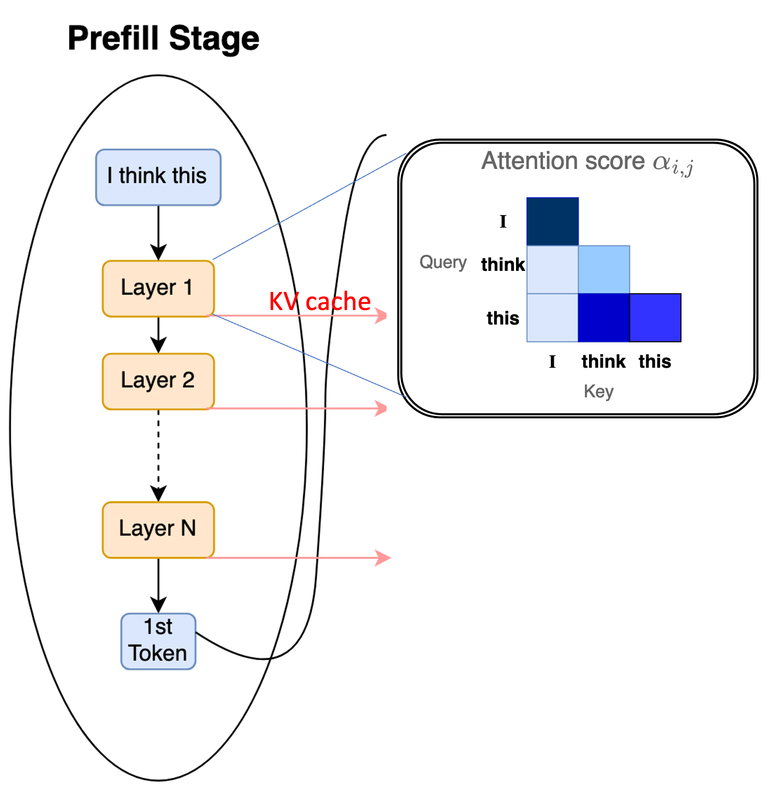
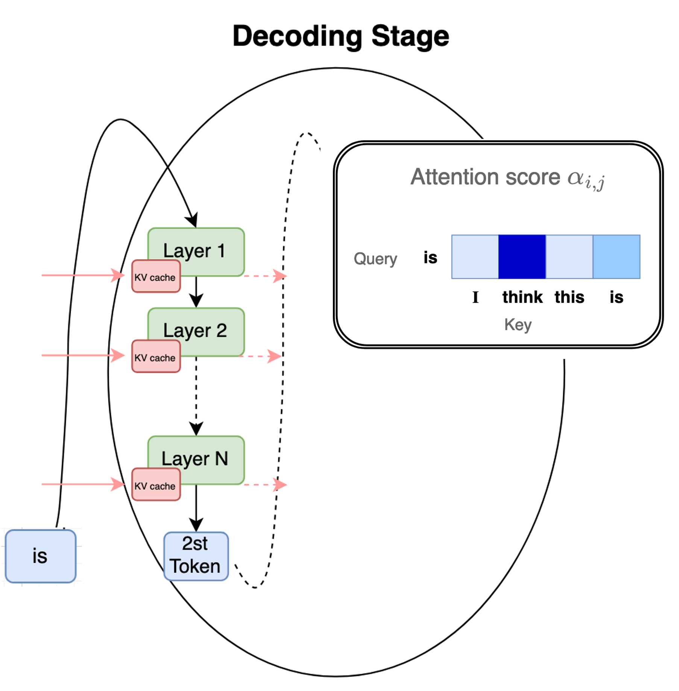

Overview of Transformer Architecture #
The transformer architecture has become the foundational backbone of modern generative AI, unifying models across language, vision, and multimodal domains. At its core, a transformer replaces the sequential computation of earlier neural network architectures with parallel attention mechanisms that allow every token to directly interact with every other token. This design not only captures long-range dependencies with ease, but also scales efficiently with larger models and datasets, enabling today’s breakthroughs in large language models (LLMs), diffusion models, vision-language systems, etc. In this section, we outline the key components of the transformer—its attention layers, feed-forward sublayers, normalization and residual pathways—and describe how they come together to form deep, scalable networks optimized for both training and inference.
The transformer architecture (Vaswani et. al., 2017)
The transformer architecture was proposed in the paper Attention is All You Need, 2017. Traditionally, it consists of an encoding component, a decoding component, and connections between them. The encoding and decoding components are comprised of a stack of encoders and decoders, respectively – each of which has an identical architecture (albeit not the same weights). Historically, the wide variety of language models are broadly categorized based on the presence of encoding and decoding components as follows:
-
Encoder-only models like BERT and RoBERTa, consist only of the encoder component. They process inputs bidirectionally, and the output of encoder-only models is a sequence of contextualized embeddings, making them ideal for discrimative tasks like classification, retrieval, and token-level tagging. Typical sizes of these models ranged from 300M to 1B parameters. These models rarely exceeded a few billion parameters because their primary use cases do not benefit significantly from extreme scale.
-
Encoder-Decoder models refer to the original transformer architecture proposed by Vaswani et al., in which both encoding and decoding components are present. Models like T5 and BART were designed to understand an input sequence and then generate a related output. They were meant for conditional generation tasks such as machine translation, summarization and instruction following. Typical model sizes ranged from 60M to 11B parameters, and training larger models became prohibitively expensive because both encoder and decoder must scale together.
-
Decoder-only models encompass the most popular and prominent architectures of models like GPT-3/4/5, Llama, Mistral, and Claude, used in chatbots and assistants. Their primary purpose is to generate text autoregressively, predicting the next token conditioned on all previous ones, making them well suited for open-ended generation. Modern decoder-only LLMs can perform nearly all tasks that encoder-only and encoder-decoder models were originally designed for, i.e., classification, retrieval, translation, summarization, question-answering, reasoning, etc. The primary reason behind this lies in the scale, i.e., the sizes of the models and the datasets on which they were trained (typically, they can go all the way up to 2T parameters).
Decoder-only models for autoregressive text generation
Compared to encoder-decoder and encoder-only models, decoder-only architectures are much simpler to scale up in size using a variety of optimization techniques (parallelization, KV caching, etc.). As a result, even though they use a causal mask for autoregressive next-token prediction, they demonstrate an implicit understanding of tasks that traditionally required bidirectional understanding. In other words, even tasks that seem discriminative (classification, retrieval, etc.) can be reframed as Generate the label, Extract the relevant phrase, Answer the question, etc.
Each transformer block consists of:
- Self-Attention block
- Positional-encoding
- Feed-forward network
- Layer Normalization
Self-Attention Mechanism #
The core idea of self-attention is to calculate an output vector (aka embedding/representation) for every token in the input sequence. The token whose representation is being computed is referred to as a query, and every other token in the sequence has an associated key and a value vector. The output vector is obtained by computing a weighted sum of all values in the input sequence, where the weight assigned to each value is determined by a compatibility function between the value’s associated key and the specific query being processed. This allows the model t capture dependencies between all elements in a sequence.
The input to the self-attention layer consists of the out put embeddings from the previous later, which are transformed into three distinct vectors for each token $i$:
- Query $(Q_i)$: Represents what the token is looking for.
- Key $(K_i)$: Represents what the token offers to the other tokens.
- Value $(V_i)$: The actual content information that is aggregated.
The self-attention output for token $i$ is calculated by: $${\rm Attention} (Q_i, K, V) = \sum_{j} \alpha_{ij}V_j,$$ where $\alpha_{ij}$ is the attention weight from token $i$ to token $j$.
Scaled Dot-Product Attention #
The most common form of self-attention is the Scaled Dot-Product Attention (SDPA). In this, first, the input sequence of embeddings, $X \in \mathbb{R}^{n \times d}$ (each row corresponds to a token), where $n$ is the sequence length and $d$ is the embedding dimension, is transformed into the Query, Key, and Value matrices $(Q, K, V)$ using three learned linear projection matrices $(W^Q, W^K, W^V)$ as follows: $$Q = XW^Q, \quad K = XW^K, \quad \text{and} \hspace{2ex} V = XW^V.$$ Here, $W^Q \in \mathbb{R}^{d \times d_k}$, $W^K \in \mathbb{R}^{d \times d_k}$ and $W^V \in \mathbb{R}^{d \times d_v}$. Consequently, the output dimensions of these linear projections are $Q \in \mathbb{R}^{n \times d_k}$, $K \in \mathbb{R}^{n \times d_k}$ and $V \in \mathbb{R}^{n \times d_v}$. Typically, $d_k = d_v = d/h$, where $h$ is the number of attention heads (for Multi-head Attention, as we will see later in Section 2).

Linear projections to compute Q, K and V. Every row in the X matrix corresponds to a token in the input sequence (credits: The Illustrated Transformer, Jay Alammar)
The compatibility score between all queries and keys is calculated using a dot product $QK^\top \in \mathbb{R}^{n \times n}$. These scores are then scaled by dividing by $\sqrt{d_k}$ to counteract the effect of large dot-product values, and subsequently passed through a row-wise softmax function to obtain the fnal attention weights $A \in \mathbb{R}^{n \times n}$. Mathematically, $$A = {\rm softmax}\left(\frac{QK^\top}{\sqrt{d_k}}\right).$$ Note that these weights are normalized probability distributions, ensuring each row sums to $1$. The final output matrix is a weighted sum of the Value matrix $V$, using the attention weights $A$, i.e., $${\rm Attention}(Q, K, V) = {\rm softmax}\left(\frac{QK^\top}{\sqrt{d_k}}\right)V \in \mathbb{R}^{n \times d_v}$$
Scaled Dot-Product Attention (SDPA) (credits: The Illustrated Transformer, Jay Alammar)
Causal Self Attention (Masked Self-Attention) #
this is the most crucial vairation of self-attention used exclusively in the decoder blocks of models for autoregressive generation tasks (i.e., generating one token at a time). Causality comes from the fact that in autoregressive generation, the prediction for the current token $i$ must only depend on the preceding tokens $(1,2, \ldots, i-1)$ and not on any subsequent tokens $(i+1, i+2, \ldots, n)$.
Causal self-attention is implemented by applying a mask to the $\frac{QK^\top}{\sqrt{d_k}}$ matrix before the softmax step. Mathematically, $$A = {\rm softmax}\left(\frac{QK^\top}{\sqrt{d_k}} + M\right).$$ Here, the mask $M \in \mathbb{R}^{n \times n}$ is an upper -triangular matrix of $-\inf$, i.e., $M_{ij} = 0$ for $j \leq i$ and $M_{ij} = \inf$ for $j > i$. Note that when the mask is added to the scaled scores, it sets the scores for all future tokens to $-\inf$. Subsequently, when the softmax is applied, $e^{-\inf} = 0$, effectively ensuring that the attention weights $A_{ij}$ for $j > i$ (future tokens) are zero. In other words, the output for token $i$ only aggregates information only from $V_1, V_2, \ldots V_i$.
Multi Head Attention (MHA) #
MHA is a core optimization, in which instead of computing a single attention distribution over the input sequence, the model’s hidden dimension is split into multiple heads. Each head learns its own set of query, key, and value projection, and the model computes scaled dot-product attention independently for each head, resulting in multiple attenton outputs. These outputs are then concatenated and linearly projected back to the model’s original dimension.
Suppose the input to the attention layer is a sequence of hidden states,
$$X \in \mathbb{R}^{T \times d_{\text{model}}},$$
where $T$ is the sequence length, and $d_{\text{model}}$ is the embedding dimension. For each head $h \in {1, \ldots, H}$ (where $H$ is the number of attention heads), we compute separate query, key, and value matrices via learned linear projections:
$$Q_h = XW_h^Q, \hspace{3ex} K_h = XW_h^K, \hspace{2ex} V_h = XW_h^V$$
where $W_h^Q, W_h^K, W_h^V \in \mathbb{R}^{d_{\text{model}} \times d_k}$. Here, $d_k = d_{\text{model}}/H$ is the dimension per head.
Each head performs scaled dot-product attention:
$$O_h \triangleq \text{Attention}(Q_h, K_h, V_h) = \text{softmax}\left(\frac{Q_hK_h^\top}{\sqrt{d_k}}\right)V_h \in \mathbb{R}^{T \times d_k}.$$
The outputs from all heads are concatenated to get:
$$O = \text{Concat}(O_1, O_2, \ldots, O_H) \in \mathbb{R}^{T \times d_{\text{model}}}$$
A final linear projection matrix $W^O \in \mathbb{R}^{d_{\text{model}} \times d_{\text{model}}}$ yields the final output:
$$\text{MHA}(X) = OW^O$$
Multi-Head Attention (MHA)
Positional Encoding #
Positional encodings are a method used to inject information about the relative or absolute position of tokens into the input sequence, enabling the model to utilize token order. Modern LLMs like the (Llama family of models) encode relative positional information directly into the attention mechanism, using methods like Rotary Positional Embedding (RoPE).
While the original transformers paper used absolute positional information in the encoding, the primary goal of RoPE is to endow the self-attention mechanism with the desriable property of length generalization, meaning the model’s ability to handle sequences longer than those seen during training.
RoPE works by applying a rotation matrix $R_{\theta,m}$ to the $Q$ and $K$ vectors based on their token index $m$, i.e., $$Q_m^\prime = R_{\theta,m}Q_m \quad \text{and} \quad K_n^\prime = R_{\theta,n}K_n,$$ where $m$ and $n$ are the positions of the current query and key, respectively. The rotation matrix is given by,
Rotary Positional Embeddings (RoPE)
The rotation is performed pair-wise on the dimensions of the embedding vector (RoFormer, 2021) as shown above, and the frequencies $\theta$ for rotation are fixed, pre-defined values.
The magic of RoPE lies in how it affects the dot product. The goal is to make the attention score (i.e., the dot product $Q_m^\prime (K_n^\prime)^\top$) depend only on the relative distance, $m-n$. In other words, the RoPE encodings satisfy: $$\left\langle R_{\theta,m}Q_m, R_{\theta,n}K_n \right\rangle = \left\langle R_{\theta,m-n}Q_m, K_n \right\rangle.$$ This mathematically enforces the desried relative position dependency directly into the attention mechanism. RoPE is particularly beneficial for casual self-attention, as it naturally handles the increasing relative distance when the sequence grows as more and more tokens are generated autoregressively. Note that RoPE is an in-place transformation that directly integrates relative positional information into the attention score computation (unlike traditional methods that add a positional vector to the input token embeddings before the first attention layer).
Inference optimization for RoPE: Since the rotation matrix calculation involves trigonometric functions, it can be computationally heavy if calculated repeatedly. A common optimization to speed up training/inference is to pre-calculate and cache the ${\rm sin}(m\theta_i)$ and ${\rm cos}(m\theta_i)$ vectors for all positions $m$ up to the maximum length. Then, rotation is simply a element-wise multiplication and addition using the pre-cached values, avoiding redundant trigonometric function calls.
Moreoever, since computing RoPE encodings involves specific element-wise operations like slicing the $Q$/$K$ vector, rotating and putting it back, it can be further sped up using fused kernels that combines these sequential operations, reducing the number of memory accesses between the compute cores and HBM.
Feed-Forward Network (FFN) #
The feed-forward network (FFN) is the second major sublayer in every transformer block, following the self-attention mechanism. It is responsible for transforming the attention-refined featres independently for each poisition in the sequence, allowing the model to learn complex non-linear relatonships. The FFN acts position-wise, meaning the exact same. FFN is applied to every single token’s embedding vector independently and identically. It does not mix information across different position, unlike the self-attention layer. The FFN typically consists of two linear transformation with a non-linear activation in between:
- Expansion layer (up-projection): Increases the dimension of the embedding
- Activation function: Introduces non-linearity
- Contraction layer (down-projection): Returns the dimension to the original size.
While the original transformer used ReLU as the activation function many modern LLMs like Llama have adopted a more sophisticated gating mechanism within the FFN, most commonly using the SwiGLU activation function. SwiGLU uses three matrices: two for the expansion phase, and one for the contraction phase. For an input $x$, it is mathematically defined as: $${\rm SwiGLU}(x, W_{up}, W_{gate}, W_{down}) = ((xW_{up}) \odot ({\rm SiLU}(xW_{gate})))W_{down},$$ where $W_{up}, W_{gate} \in \mathbb{R}^{d \times d_{\rm ff}}$, $W_{down} \in \mathbb{R}^{d_{\rm ff} \times d}$, $\odot$ denotes the element-wise Hadamard product, and $\rm SiLU$ is the sigmoid linear unit activation function.
The gated path via $\rm SiLU$ acts as a dynamic filter, determining which information from the linear path, i.e., $xW_{up}$ is allowed to pass through to the next layer and how strongly. Typically, $d_{\rm ff}$ four times the model’s embedding dimension $d$. The $\rm SiLU$ function is a smooth, non-monotonic activation often used in place of ReLU, and is defined as: $${\rm SiLU}(z) = z\cdot \sigma(z),$$ where $\sigma(z) = \frac{1}{1 + e^{-z}}$ is the standard sigmoid function.
Inference optimization for FFN: The FFN layer receives output from the attention sublayer. In the complete transformer block, the FFN is integrated using a residual connection and a Layernorm step, i.e., $$Y = {\rm LayerNorm}(X_{\rm attn} + {\rm FFN}(X_{\rm attn}))$$. The FFN layer is a significant computatioanly intensive part of the transformer block during inference, due to the large matrix multiplications it performs. Due to their large memory footprint, quantizing the weights of the FFN layers to low-precision formats like FP8 is pretty common. Moreover, since the SwiGLU calculation involves several sequential element-wise operations, they can be fused tohether into a single, unified kernel, reducing launch overheads. More recently, the FFN layer has been replaced by Mixture-of-Experts (MoE) layers, which we will look in details later.
Layer Normalization (LayerNorm) #
In general, LayerNorm is a technique used to normalize the activations. of the neurons across the features (hidden dimensions). For a given input vector $x = (x_1, \ldots, x_d)$ from a layer’s output, LayerNorm calculates the normalized output $y$ as follows:
- First, the mean $\mu$ and variance $\sigma^2$ are calculated across all $d$ features as $\mu = \frac{1}{d}\sum_{i=1}^{d}x_i$ and $\sigma^2 = \frac{1}{d}\sum_{i=1}^{d}(x_i - \mu)^2$.
- Next, each element $x_i$ is normalized using the calculated mean and variance as $\hat{x}_i = \frac{x_i - \mu}{\sqrt{\sigma^2 + \epsilon}}$, where $\epsilon$ is a small constant (like $10^{-5}$) added for numerical stability to prevent division by zero in case the variance is zero. The output $\hat{x}_i$ now has a mean of zero and a variance of one across the hidden dimension.
- The normalized output $\hat{x}_i$ is then scaled by a learnable parameter $\gamma$ and shifted by another learnable parameter $\beta$. These two parameters allow the model to rescale the normalized values as $y_i = \gamma_i \hat{x}_i + \beta_i$, providing a unique scale $(\gamma_i)$ and shift $(\beta_i)$ factor for each feature dimension $i$. The scale $(\gamma)$ and shift $(\beta)$ parameters are vectors of size $d$, and are learned during the training process via backpropagation.
In the standard transformer layer, LayerNorm is typically placed in a Post-Norm configuration, i.e., as part of the structure: $$H = {\rm LayerNorm}(X + {\rm SubLayer}(X)),$$ where $X$ is the input to the SubLayer (either Self-Attention of Feed-Forward Network). The final output $H$ is the result of applying LayerNorm to the sum of the input $X$ and the sublayer’s output (also known as Residual Connection).
Inference optimization for LayerNorm: Layernorm poses a bottleneck during inference primarily for two reasons:
- Since it is a row-wise operation, meaning it calculates the mean and variance idnependently for each row/token in the sequence, the input data must be read from the main memory, processed, and written back. Unlike large matrix multiplication (like $QK^\top$), which reuse the same input data multiple time (i.e., high arithmetic intensity), LayerNorm has very little data reuse, making it a memory-bandwidth bound operation.
- Moreover, the normalization formula involves calculating the mean, variance, square root, and division. The mathematical operations are complex to implement efficiently on hardware, particularly when using standard, high-precision floating-point arithmetic.
The most common optimization to overcome this bottleneck is to use kernel fusion, i.e., the sequence of mathematical operationsthat constitue Layernorm are fused into a single kernel, drastically reducing the need to repeatedly read intermediate results from memory and write them back, improving compute core utilization. Furthermore, computation of non-linear functions are sped up using approximation techniques like look-up tables (LUTs), piecewise-linear approximations, etc.
Overview of Inference Computations #
Prefill and Decoding stages in Autoregressive decoding
Autoregressive inference for LLMs is the process of generating an output continuation ($Y$) from an input prompt ($X$), and is fundamentally divided into two distinct computational phases: the Prefill Stage and the Decoding Stage. Understanding this division is essential because the computational and memory bottlenecks differ significantly between the two.
-
Prefill Stage (Prompt Processing) This stage processes the entire input sequence $X$ to prepare the model for generation.
- Input: The entire prompt sequence $X = {x_1, x_2, \dots, x_L}$.
- Computation: The model performs a full forward pass, calculating the self-attention for all $L$ tokens simultaneously.
- Computational Cost: The primary cost is in the self-attention mechanism, which scales quadratically with the length of the input sequence $L$, denoted as $O(L^2)$. This is the most computationally expensive part of the entire inference process for long prompts.
- Output: The model generates the probability distribution for the first output token, $y_1$. Crucially, it also computes and stores the Key ($K$) and Value ($V$) vectors for every input token in a memory buffer called the KV-Cache.
Prefill processes the entire prompt, generates the first token, and populates the KV cache
-
Decoding Stage (Token Generation) After the first token is generated at the end of prefill, this stage iteratively generates the output sequence $Y$ one token at a time.
- Input: The last generated token ($y_{t-1}$) and the previously computed $K$ and $V$ vectors (the KV-Cache).
- Computation: The model performs a single-step forward pass (one token). Since the $K$ and $V$ vectors for all prior tokens are already cached, the attention calculation only needs to consider the new token against the existing KV-Cache.
- Computational Cost: This stage is memory-bound, as the model spends most of its time fetching the growing KV-Cache from memory rather than performing complex arithmetic.
- Output: A new token $y_t$ is generated, and its corresponding $K$ and $V$ vectors are appended to the KV-Cache. This step repeats until $n$ tokens are generated or a stopping condition is met.
Autoregressive decoding generates the subsequent tokens, one-at-a-time and keeps appending to the KV cache
To optimize the prefill stage, focus is generally on speeding up matrix multiplication and attention calculations (e.g., FlashAttention). On the other hand, optimizing decoding stage focuses on managing the large KV-cache memory footprint (e.g., PagedAttention and GQA).
References #
- Vaswani et al., 2017, Attention is All you Need https://arxiv.org/abs/1706.03762
- The Illustrated Transformer, Jay Alammar https://jalammar.github.io/illustrated-transformer/
- Raffel et al., 2019, Exploring the Limits of Transfer Learning with a Unified Text-to-Text Transformer https://arxiv.org/abs/1910.10683
- Sebastian Raschka, Blogpost: Understanding and Coding the Self-Attention Mechanism of Large Language Models From Scratch, 2023 https://sebastianraschka.com/blog/2023/self-attention-from-scratch.html
- Lewis et al., 2019, BART: Denoising Sequence-to-Sequence Pre-training for Natural Language Generation, Translation, and Comprehension https://arxiv.org/abs/1910.13461
- Devlin et al., 2018, BERT: Pre-training of Deep Bidirectional Transformers for Language Understanding https://arxiv.org/abs/1810.04805
- Liu et al., 2019, RoBERTa: A Robustly Optimized BERT Pretraining Approach, https://arxiv.org/abs/1907.11692
- Su et. al., RoFormer: Enhanced Transformer with Rotary Position Embedding, 2021 https://arxiv.org/abs/2104.09864
- LayerNorm, NKI API Docs, https://awsdocs-neuron.readthedocs-hosted.com/en/latest/nki/tutorials/layernorm.html